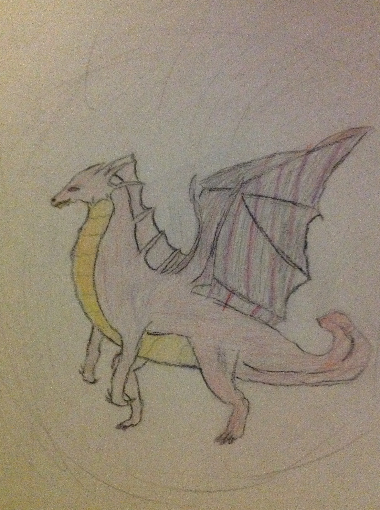
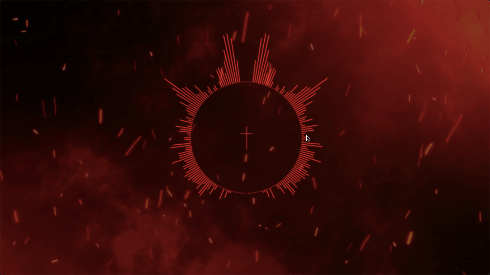
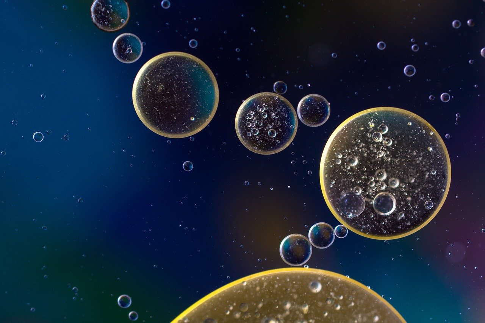

Digital Art
My first drawing is unknown to me but the latest I know dates back to 2012. I was 9. Below is one I did in 2013. It’s funny to see that I am interested in the same thing, I never deviated from anthro characters. Dragons were my favorite to draw. However, they were other creators' work. I copied their design which I now know is a no no.
I still do traditional art as an outline before making the final product digitally. Character design is my specialty. I made it a job for it, and when school is done, I will do commissioned work.You will be able to see some of my work here.This also includes photography.
Most of my style is from manga art, comics, and anime. As I told you in the previous paragraph, I do traditional art first (sketchbook) and then transition to the computer. I use Krita to draw and animate (yes, I animate too), though I currently animate fan made skits instead of plain characters for video games.
Music
Being a musician is a complete hobby. I do not want to profit off of this. I mainly make music for fun, to listen to my own work. It is amateur and doesn’t have the quality of a well produced song. My sound mastering needs work. I also make visualizers to showcase the song. However, I do not have the confidence to publish any of my songs to soundcloud or YouTube. Darn my shy nature!
Screenshot of visualizer from MacBook Air (you can see my cursor :P)
I specialize in many different genres. Genres like EDM, Chill/Lo-Fi, classical/score. I’ve recently done a Latino and 80’s Dance song that was purely experimental but sounded good otherwise. I do enjoy making scores the most.
I use Garageband (mobile and computer) to create the piece and FL Studio to make the visual. Both are free and easy to learn. I say easy but I’ve been creating content since 2016, so I am well ordered in the software.
Writing
Simply, I like to write. So here something I wrote a month ago.
“There. A creature, defined as a mortal yet lives eternally. Pain is sent amongst those nearby, but no one’s there to remember. Sometime ago the physical form was monstrous, size and shape made of black mystical mist thicker than fog. Consumed inside, the pressure builds. The grained eyes stained in [a] red, poisonous gaze able to stun, perhaps kill if so chosen. Body of shapeshifting powers, heavy and black winged, spanning great and strong as silver. Unstable tempered beast, fleshed fluff spun in dark energy. Draining the life from the soul attached to their coil-”, the rest is not so school friendly.